PLAYING
WITH FIRE
Stories around the fire, about AI. Fire was humanity's first technology; AI might be its latest. One evening, eight chapters: the old tales and the rumours, the words people use, the first small fire and how to keep it going, a camp of many fires, the one we lit for VAVE, the smoke to watch out for, and the embers you take home.
The evening
Eight chapters around one fire. Every deck and every tool is a single file: it works offline, on a phone, and inside the PixiNotes board.

0:00I · The gathering
The fire is lit. Who is telling tonight: a translator between problems and machines. Three promises, and questions are sticks for the fire.

0:07 · BeginnerII · Old fires
Seventy years of AI stories, from the summer that took 70 years to glue on pizza. Then the rumours: myth or fact?

0:19 · BeginnerIII · Words by the fire
The words everybody uses, said plainly with booths and showrooms: tokens are Lego, the context window is the booth footprint, MCP is the power socket.

0:33 · Beginner → CasualIV · Kindling
Your first small fire: one HTML file, one good briefing, a live booth mini-build. Then how to keep it going: the loop, memory files, your brand.

0:50 · AdvancedV · Many fires
GitHub as the camp: one account, many organizations, many AIs through one workflow, and many repos remixed like Lego.

1:03 · AdvancedVI · A fire for VAVE
The making of vave.log, a tool built for VAVE and a draft in testing: how it grew, what it can do, and proposals for what comes next.

1:15VII · Smoke
Every campfire has ghost stories. Ours are true: seven of them, each with a way to keep it away. Plus the fireplace rules.

1:23VIII · Embers
What you take home: side quests for communication in space, the Booth Builder, one experiment for Monday, and your questions.
Take the whole evening
The talk also exists as a ready-made PixiNotes board, and the board is the stage: eight camps along a fire trail, each with its pixel chapter card, its deck and its live tools, idea bubbles and kanbans. Presentation mode steps only through what the room should see. A script written by an AI builds it: the native cards go in through PixiNotes' own MCP server.
Download the board- Open PixiNotes (web or the offline file).
- Drag
campfire.pixiboard.jsononto any board. - It arrives as a new board. Your other boards stay untouched.
- Presentation mode walks the camps in order: chapter card, deck, tools, bubbles.
- 8 reveal.js decks, also as PDF handouts
- 8 interactive tools: Myth or Fact?, Token Oracle, Context Circle, Words, Prompt Forge, Git Time Machine, Fireplace Check, Booth Builder
- Pixel art: eight chapter cards, the title, the trail, the booth world, old fires, the camp, the remix map, the making of vave.log, the smoke
- Native board cards: idea bubbles with dot voting, kanbans
Pixel art
Every image is SVG: sharp at any size, animated in steps, still when your system asks for less motion. PNG versions are four times the pixel size.